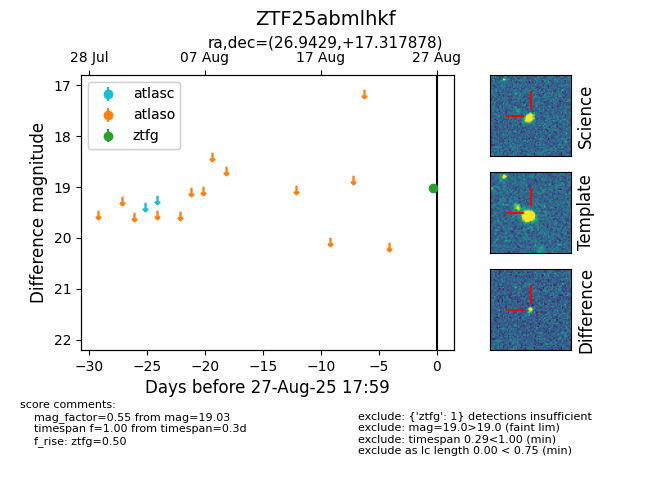

Target ZTF25abmlhkf at 2025-08-27 17:59, see:
FINK: fink-portal.org/ZTF25abmlhkf
Lasair: lasair-ztf.lsst.ac.uk/objects/ZTF25abmlhkf
ALeRCE: alerce.online/object/ZTF25abmlhkf
alt names
ZTF25abmlhkf (ztf,fink)
coordinates:
equatorial (ra, dec) = (26.9429,+17.31788)
galactic (l, b) = (141.6105,-43.50131)
photometry
last ztfg=19.03
1 ztfg detections
